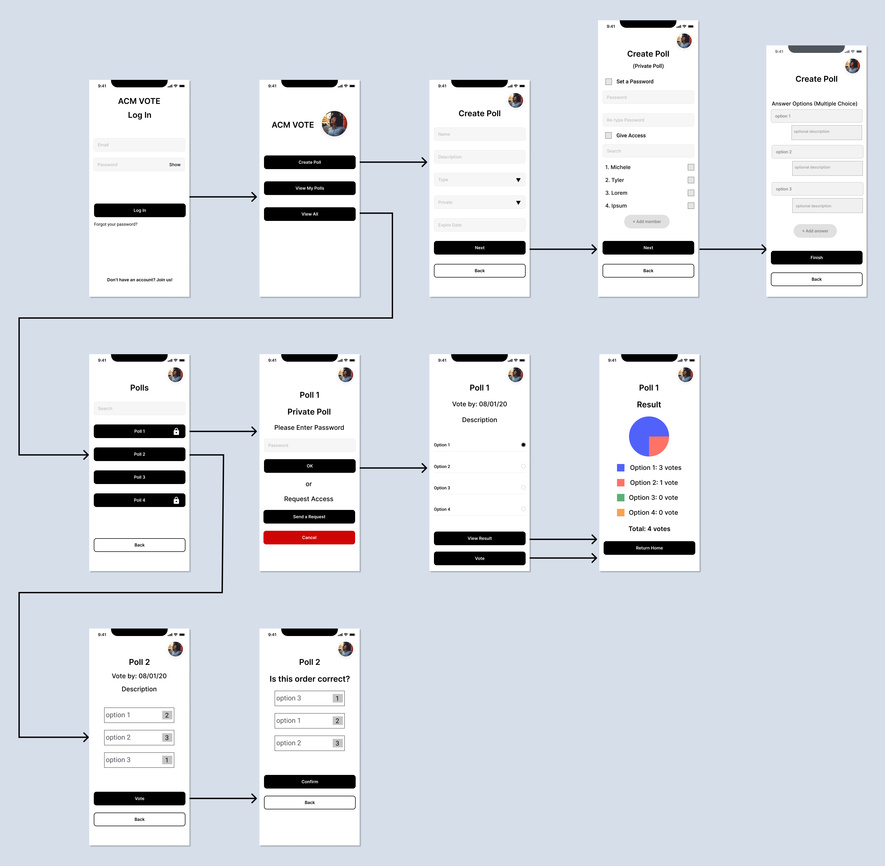

Note: The project is current in update, and it will be updated soon. Thank you for waiting! :)
Project Overview
Date: July 2020 to September 2020
Role: UI/UX Designer
Teammates:Product Manager: Matei-Alexandru Gardus
Mentor: Paul Pan
Lead Designer/UX Researcher: Michele Murakami
Front End Developers: Maggie Mao, and Dhruv Sood
Back End Developer: Michael Shao
Tools: Figma
Background
ACM UC San Diego is UCSD's largest code and design student organization. The organization has grown pretty quickly, and there is an increase in the number of board positions. Thus, it create the challenge in managing board elections, and keeping track of the vote counts.
In order to improve the process of ACM board elections, we created an application that users would be able to create polls, vote, and keep track of the votes from ACM members.
Initial Research
Michele, who was a Lead Designer and UX Researcher, began the research by searching voting software and polling websites in general for inspiration. Moreover, she collected information from current ACM board members, who would use the application.
From her research, we got the main issues including:
1. It was inconvenient to count the votes manually.
2. It was challenging to check who had not yet voted in order to remind them.
3. By counting manually, it was easy to make mistakes, and get the wrong results.
Problem Statement
How can we simplify the board election process and in-club voting and poll data collection for ACM @ UCSD?Sketches
With the information from the initial research, and discussing with other teammates about the app and its features, Michele made sketches of the app's layout and flow, in order to have a general idea about how it works.

Wireframes
From the sketches, Michele and I created two separate initial wireframes in order to see more potential ideas and features. Then, we combined our design, and discussed with other team members including the developers. Also, we asked them for feedback.
My Initial Wireframes
Feedback
After discussing with other team members, we received feedback including:
Lack of components to prevent or recover from errors: There were not enough components allowing users to go back or undo an action. For instance, if users accidentally tapped "Cancel" button when they were in "Create Poll" page, there would not be a confirmation pop-up to make sure if they really want to cancel creating poll or not. Therefore, they would lose any information they had put in progress.
Confusing privacy feature: The drop down button choosing either private/public poll was unclear for other team members. Thus, we changed it to multiple choice option and added a description telling users what private and public meant.
Final Combined Wireframes
Usability Testing
After the changes for final combined wireframes. We conducted 12 interviews over Zoom (which took about 25 to 30 minutes for each interview). The people we interviewed included both ACM members, and people who were not an ACM member
During the interviews, users tested our Figma prototype by performing three tasks. Then, they gave us feedbacks, and suggestions about what we should change or improve on the prototype.
User Feedback
4 out of 12 users found that typing numbers for the ranking was inconvenient, and they preferred the feature that they would be able to hold and drag the options to rank them in a particular order
4 out of 12 user said that a "delete and edit current polls" option would be great
5 out of 12 users thought the "Create Poll" page was too long to have all the information, and we needed to move the "Answer Options" section to a separate page
6 out of 12 users mentioned that the wording of titles and input fields was confusing to them
After the third iteration, we interviewed 5 more people for another set of user testing. Based on the feedback, we found that we needed to adjust creating poll pages. Moreover, some colors of the buttons were confusing for users. Thus, we also needed to change the colors.
Prototyping
Through the project, we had 3 different iterations for our prototypes, before making our final design. Based on the user tests, some features such as deleting polls, editing polls, or a page to view all polls would be great to have. Nevertheless, we had to delete those features. The deadline was really close, and the developers would not be able to implement those by that time.
Note: There is an interactive prototype below to explore, while waiting for more information about the process of prototyping. - Will update later :)
Visual Design
Our visual design goal was to show the diversity of thoughts and opinions in ACM UC San Diego, including voting. Therefore, for the app, we considered having different colors to represent, and we chose 4 colors from the organization's color scheme.
Reflection
I enjoyed a lot being a UI/UX Designer for ACM Side Projects. It was really fun to work on the project with a team that included a Product Manager, a Lead Designer/UX Researcher, Front End Developers, and a Back End Developer. It was nice to discuss with the members, and learn something new from them. The developers' feedback was really helpful, and it helped Michele and I know what needs to improve in our wireframes and prototypes. Furthermore, it was great working with Michele, and I learned a lot from her. She helped me improving my skills such as User Research, Usability Testing, and Visual Design.